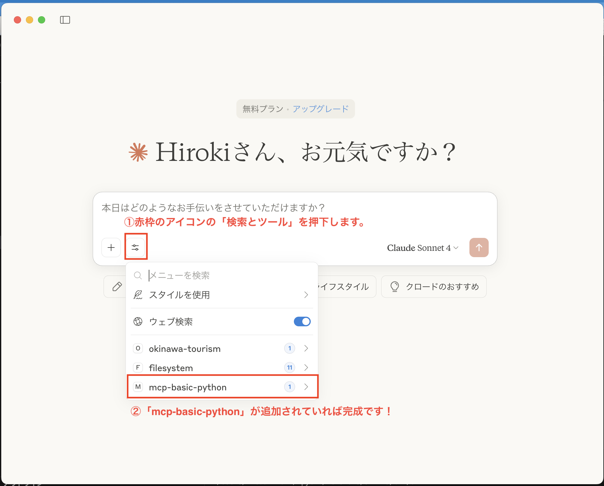

1. プロジェクト環境構築
macOS / Linux
# 新しいディレクトリとプロジェクトを作成
uv init mcp-practice-python
cd mcp-practice-python
# 仮想環境を作成し、仮想環境を有効化
uv venv
source .venv/bin/activate
# 仮想環境にパッケージの依存関係をインストール
uv add "mcp[cli]" requests
# データベースとCSVをディレクトリ内にコピー
wget https://raw.githubusercontent.com/SuperMarimoBros/0626_mcp_handson/blob/main/mcp-practice-python/garbage_collection.db
wget https://raw.githubusercontent.com/SuperMarimoBros/0626_mcp_handson/refs/heads/main/mcp-practice-python/garbage_collection.csv
2. main.pyの書き換え
main.pyを以下のコードに書き換えて下さい。
main.py
from mcp.server.fastmcp import FastMCP
import sqlite3
import os
from dotenv import load_dotenv
import requests
load_dotenv()
SLACK_API_URL = os.getenv("SLACK_API_URL")
if not SLACK_API_URL:
raise ValueError("環境変数 SLACK_API_URL が設定されていません")
DB_FILE = "garbage_collection.db"
# Initialize FastMCP server
mcp = FastMCP("mcp-garbage")
@mcp.tool()
def search_garbage_collection(query: str) -> str:
"""
クエリに基づいてゴミの集荷日を検索する
Args:
query: SQLのSELECTクエリ（ゴミ収集スケジュールテーブル: garbage_schedule）
Returns:
str: クエリ結果をフォーマットした文字列。結果がない場合はその旨を返す。
テーブル構造:
- 日付 (TEXT): ゴミ収集日の日付
- 曜 (TEXT): 曜日
- 地区 (TEXT): 収集対象地区
- ゴミ種別コード (INTEGER): ゴミの種別を表すコード
例:
SELECT * FROM garbage_schedule WHERE 地区 = '中央区①'
SELECT 日付, ゴミ種別コード FROM garbage_schedule WHERE 曜 = '月曜日'
注意:
セキュリティ上の理由により、SELECT文のみ実行可能です。
"""
# SELECT文以外を弾く簡易的なセキュリティチェック
# このチェックは非常に基本的なもので、実際のアプリケーションではより堅牢なセキュリティ対策が必要です。
if not query.strip().upper().startswith("SELECT"):
return "Error: Only SELECT queries are allowed1213."
with sqlite3.connect(DB_FILE) as conn:
conn.row_factory = sqlite3.Row
cur = conn.cursor()
try:
cur.execute(query)
results = cur.fetchall()
if not results:
return "クエリの実行は成功しましたが、結果が見つかりませんでした。"
# 結果を辞書形式でフォーマットして返す
formatted_results = []
for row in results:
row_dict = dict(row)
formatted_results.append(str(row_dict))
return f"クエリ結果:\n" + "\n".join(formatted_results)
except sqlite3.Error as e:
return f"SQLエラー: {str(e)}"
@mcp.tool()
def post_to_slack(message: str) -> str:
"""
Slackにメッセージを投稿する
Args:
message: 投稿するメッセージ
Returns:
成功または失敗のメッセージ
"""
if not SLACK_API_URL:
return "Error: Slack API URL is not configured."
try:
response = requests.post(
SLACK_API_URL,
json={"message": message},
headers={"Content-Type": "application/json"}
)
response.raise_for_status()
return "メッセージがSlackに投稿されました。"
except requests.RequestException as e:
return f"Slackへの投稿に失敗しました: {str(e)}"
if __name__ == "__main__":
mcp.run()3. MCPクライアントの設定
Claude Desktopの場合
お使いのOSに合わせて、以下のコマンドを実行し設定ファイルを開きます。
macOS / Linux
code ~/Library/Application\ Support/Claude/claude_desktop_config.jsonNOTE:
`code`コマンドが使えない場合は、以下のコマンドでディレクトリを開いてから、手動で`claude_desktop_config.json`ファイルを作成・編集してください。
open ~/Library/Application\ Support/Claude/
開いた `claude_desktop_config.json` に以下の内容を追記します。
claude_desktop_config.json
{
"mcpServers": {
"mcp-practice-python": {
"command": "uv",
"args": [
"--directory",
"<ここを絶対パスに書き換えて下さい>",
"run",
"python",
"main.py"
],
"env": {
"SLACK_API_URL":"https://d4rlr7tujk.execute-api.ap-northeast-1.amazonaws.com/Prod/messages/create"
}
}
}NOTE:
`command`フィールドに`uv`実行ファイルのフルパスを指定する必要がある場合があります。その時は、以下のコマンドでパスを取得できます。
which uv
プロジェクトの絶対パスは、以下のコマンドで確認できます。表示されたパスを `claude_desktop_config.json` の `<ここを絶対パスに書き換えて下さい>` の部分に貼り付けてください。
MCPの基本で使ったパスと同じになるはずです。
Bash
pwd
# 実行例：/Users/USER_NAME/Desktop/MCPハンズオン/mcp-practice-python4. MCPクライアントから呼び出し
Claude Desktop
- Claude Desktopを起動します（すでに起動中の場合は、再起動してください）。
- 「検索とツール」を開き、「mcp-practice-python」が追加されていることを確認します。
- 以下のプロンプトを試してみてください。
プロンプト例 1
mcp-practice-pythonで可能なツールを表示
プロンプト例 2
中央区①は明日何ゴミの日？
プロンプト例 3
xxxとタイトルをつけてslackに投稿して。補足： Claude DesktopのMCP構築完了画面
Claude Desktopで「mcp-basic-python」が正常に追加された状態の画面例です。
